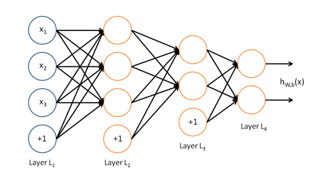

Outline
- Definir qué queremos decir con Aprendizaje Automático (Machine Learning)
- Ver varios aplicaciones recientes
- Ver qué factores influyen en el auge actual
- Ver un poquito de la matemática de una red neuronal
- Mostrar algunas arquitecturas de redes
- Ver algunos ejemplos aplicados
- Compartir algunos recursos interesantes que hay en internet
ML Algorithm
Machine Learning
Ejemplo: Clasificación de objetos
Machine Learning
Ejemplo: Google Translate
Google Translate arrancó en el 2006 y es utilizado por ~ 500 millones de personas por mes.
En 2016 el equipo de Google Brain reemplaza el motor viejo por uno nuevo basado en redes neuronales
En 9 meses obtienen mejoras análogas las que habían tenido en los últimos 10 años
Uno no es lo que es por lo que escribe, sino por lo que ha leído.
Machine Learning
Ejemplo: Google Translate
"Uno no es lo que es por lo que escribe, sino por lo que ha leído."
Si traducimos esa frase en el viejo sistema de Google Translate:
“One is not what is for what he writes, but for what he has read.”
En la nueva versión que utiliza ML:
"You are not what you write, but what you have read.”
“One is not what he is by what he writes, but by what he has read.”
La historia completa de cómo fue todo este cambio está en: The Great A.I. Awakening, NYTimes
Machine Learning
Ejemplo: playing Videogames
Machine Learning
Ejemplo: Alpha Go
- Dos jugadores ponen piezas blancas/negras en un tablero de 19x19
- Objetivo del juego es conquistar territorio
- El Go tiene reglas más simples que el Ajedrez pero muchísimo más branching.
- El primer partido formal que AlphaGo ganó fue contra el 3-veces campeón Europea, Mr Fan Hui, en Octobre 2015. Le ganó 5-0
- En Marzo 2016 le ganó en Seul, Korea 4-1 a Lee Sedol, el mejor jugador de Go del mundo, ganador de 18 títulos mundiales
En Netflix hay un documental excelente llamado AlphaGo que cuenta la historia.
Machine Learning
Ejemplo: Finding new planets
Identifying Exoplanets with Deep Learning: A Five Planet Resonant Chain Around KEPLER-80 and an Eighth Planet Around KEPLER-90 (PDF)
Machine Learning
Ejemplo: Model-free Estimation from Data of the Lyapunov Exponents
Edward Ott y 4 colaboradores de la Universidad de Maryland utilizan reservoir computing para predecir la dinámica de sistemas caótico
- "Using Machine Learning to Replicate Chaotic Attractors and Calculate Lyapunov Exponents from Data" (PDF)
- "Model-Free Prediction of Large Spatiotemporally Chaotic Systems from Data: A Reservoir Computing Approach", Phys. Rev. Lett. 120, 024102 – Published 12 January 2018
Qué pasó en este último tiempo (5 años)?
Hubo una serie de avances en ML y en particular en el uso de redes neuronales
- La investigación en redes neuronales se había estancado
- En ML tradicional hay un punto que más datos no implican mejores resultados
- En las redes neuronales cuánto más información mejor es la performance
- Cuanto más grande es la red, mejora aún más la performance
- Tenemos muchísima más información ahora
- La capacidad de las computadoras y la aparición de GPUs
- Se resolvieron problemas de aprendizaje en 'deep neural networks' (redes de muchas capas)
Ganador del ImageNet
Machine Learning
Neural networks
La "hipótesis" es una función de mi vector \( \textbf{x} \): \begin{eqnarray*} \textbf{h}_{W,b}( \textbf{x} ) & = f \left( \sum_{i=1}^3 W_{i} x_i + b \right) \\ & = f(\textbf{W}^T \textbf{x} + b) \end{eqnarray*}
Machine Learning
Neural networks: función activación
\( f(z) = {1 \over {1 + e^{-z}}} \) o \( f(z) = tanh(z) \)
Machine Learning
Neural networks: 3 capas
Machine Learning
Neural networks: training
Para obtener los parámetros \( W,b \) utilizo un conjunto de entrenamiento de \( m \) muestras \( (x^{(i)}, y^{(i)} ) \) y busco minimizar la siguiente función:
\begin{eqnarray*} J(\textbf{W}, \textbf{b}, \textbf{x}, \textbf{y}) = { 1 \over 2 } \Vert h_{\textbf{W,b}}(\textbf{x}) - \textbf{y} \Vert^2 \\ \end{eqnarray*}
La fórmula completa si ahora promedio sobre mi conjunto de \( m \) muestras es:
\begin{eqnarray*} J(\textbf{W}, \textbf{b}) = { 1 \over m } \left [ \sum_{i=1}^{m} J(\textbf{W}, \textbf{b}, \textbf{x}^{(i)}, \textbf{y}^{(i)}) \right ] + {\lambda \over 2} \sum_{l=1}^{n_l - 1} \sum_{i=1}^{s_l} \sum_{j=1}^{s_{l+1}} \left ( \textbf{W}_{ji}^{(l)} \right ) ^2 \\ \end{eqnarray*}
Machine Learning
Neural networks: Backpropagation algorithm
Para minimizar \( J(\textbf{W}, \textbf{b}) \) hay un algoritmo standard llamado gradient descent
Básicamente la matriz de pesos se actualiza mediante la siguiente regla:
\begin{eqnarray*} \textbf{W}_{ij}^{(l)} & := \textbf{W}_{ij}^{(l)} - \alpha { \partial \over {\partial \textbf{W}_{ij}^{(l)}} } J(\textbf{W}, \textbf{b}) \\ \textbf{b}_{i}^{(l)} & := \textbf{b}_{i}^{(l)} - \alpha { \partial \over {\partial \textbf{b}_{i}^{(l)}} } J(\textbf{W}, \textbf{b}) \end{eqnarray*}
Para calcular las derivadas hay un algoritmo eficiente llamado Backpropagation
Arquitectura de Redes Neuronales
ejemplo de 4 capas
Las más simples tienen unas pocas capas. El ejemplo de abajo tiene una capa entrada, 2 capas escondidas y una de salida
Arquitectura de Redes Neuronales
Convolutional Neural Netwokrs
- Cada capa se representa como un volumen en lugar de una linea de unidades
- Esquema general de una CNN. Vemos 4 capas: entrada, dos de convolucion y una de salida.

Convolutional Neural Netwokrs
- La capa de entrada tiene 32x32x3 (3.072 neuronas)
- Sólo unas pocas neuronas de la capa de entrada estan conectadas con cada 'fibra' de la segunda capa.
Convolutional Neural Netwokrs

Otra forma de ver cómo están conectadas las capas
Sparse Autoencoder
Una red neuronal que implementa la función identidad (\( \mathbb{I} \))
Sparse Autoencoder
Para qué puede servir
- Parecería poco útil
- Sirve para comprimir la información de la capa de entrada
- Se llama sparse porque en la etapa de enseñanza se agrega una 'restricción': que la mayoría no esté activada
- Si a este tipo de redes se las entrena con sets grandes de datos aprenden a identificar features
- El ejemplo emblematico es el paper de 2012 de la gente de Google conocido como el Cat paper
- 1000 millones de conexiones, 10 millones de imagens de 200x200, cluster de 1000 máquinas (16000 cores).
- Muestran que pueden detectar caras (y gatos!) sin necesidad de etiquetar las muestras Unsupervised Learning
Ejemplo de la vida real
AlphaGo
- AlphaGo utiliza dos redes neuronales + 1 algoritmo de 'tree search'
- La primer red es la policy network. Nos recomienda jugadas para hacer
- La segunda red es la value network. Nos dice con qué probabilidad podemos ganar a partir de la posición actual.
- La capa de entrada tiene 48 planos de 19x19 neuronas
- Ambas redes son un conjunto de ~ 15 capas de convolución (cada una)
- La capa de salida de la policy network tiene 1 plano de 19x19 con la distribución de probabilidad
- La capa de salida de la value network es un escalar con la probabilidad de ganar/perder dada la posición de entrada
AlphaGo
AlphaGo
Input layers
Resources
- Awesome Deep learning papers and other resources
- Deepmind research webpage
- Google Brain Team
- Neural Networks and Deep Learning - Michael Nielsen
- Tensorflow - Google ML Framework / Tensorflow JS
- Tinker With a Neural Network Right Here in Your Browser
- Keras: The Python Deep Learning library
- CS229: Machine Learning | Dan Boneh / Andres Ng - CS229: Machine Learning YouTube lectures
- Docker + Jupyter + Tensorflow
- Machine Learning Crash Course | Google
<Muchas Gracias!>
Link a la charla: http://bit.ly/ml-2018